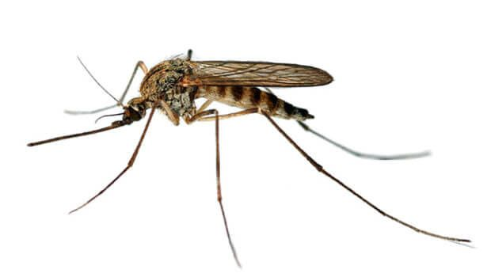

Вот список вредных насекомых, которых можно встретить в доме:
Кусают, переносят паразитов (особенно от животных). Могут жить в коврах, постели, у домашних животных.
Кусают, нарушают сон, могут переносить инфекции. Встречаются во влажных зонах, рядом с окнами и водой.
Портит одежду (платяная) или еду (пищевая), откладывает личинки. Может водиться в шкафах, комодах, кладовках.
Домашние мухи могут переносить инфекцию, загрязнять пищу. Могут жить на кухне, рядом с мусорным ведром, на окнах.
Переносят бактерии, могут вызывать аллергию, портят продукты. Могут жить на кухне, в щелях, в ванной.
Портит крупы, специи, сухофрукты, муку. Соответственно живет в кладовых, шкафах с продуктами.